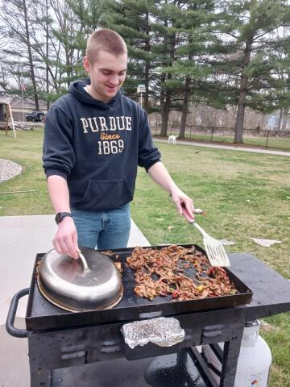

August 7th & 8th, 2023

Lucas Carpenter is a student at Riley High School. He has been studying computer science for 5 years and completed 6 MyPLTW Engineering and Computer Science classes. He enjoys tinkering, building things, running, and hanging out with his little brother Sam.
Abby Gray is a senior Computer Science student currently in Independent Study. She has enjoyed CS all four years, and one of her favorite memories is during freshman year, when Ms. Haubold and Mr. Ponder co-taught the intro class. In her free time, she enjoys reading and spending time with friends.

Tiffany Schmok is a senior at Riley High School. She has taken computer science classes for four years. She has played three sports in high school and enjoys learning about computers. She has received many accolades in high school including winning the Grand Kiwanis award.

Kristen Haubold has been teaching at Riley High School for ten years and loves to share her love of coding with teenagers. She is the proud parent of two young adults and enjoys reading, crafting, and being outside in her free time.